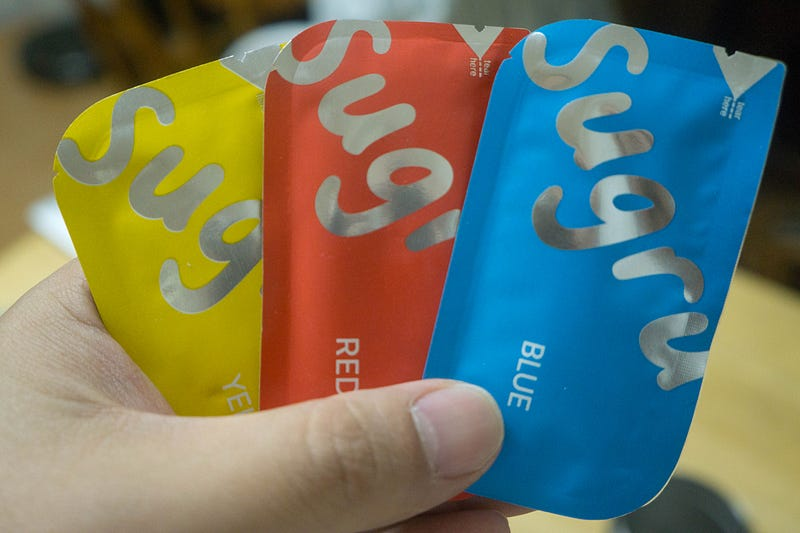
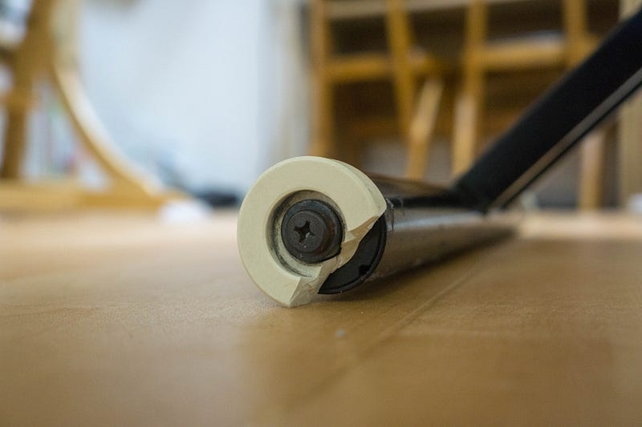
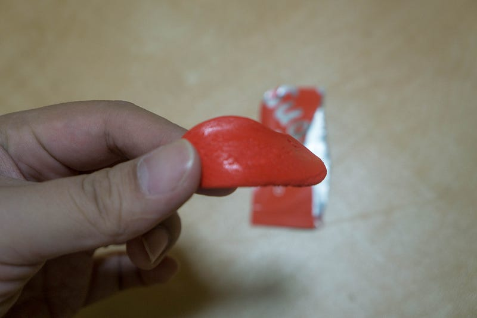
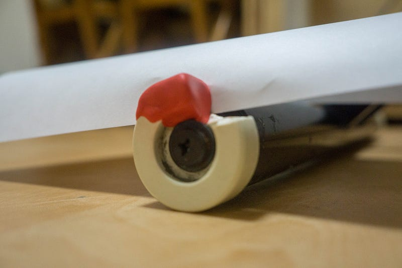
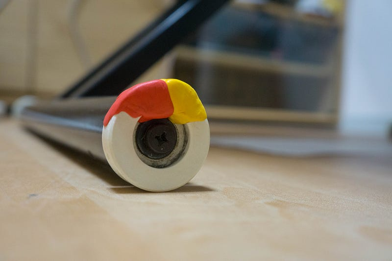
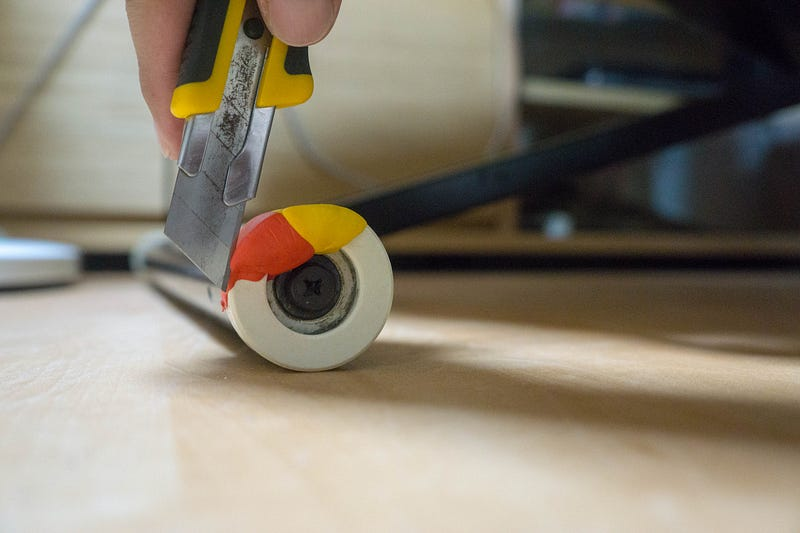
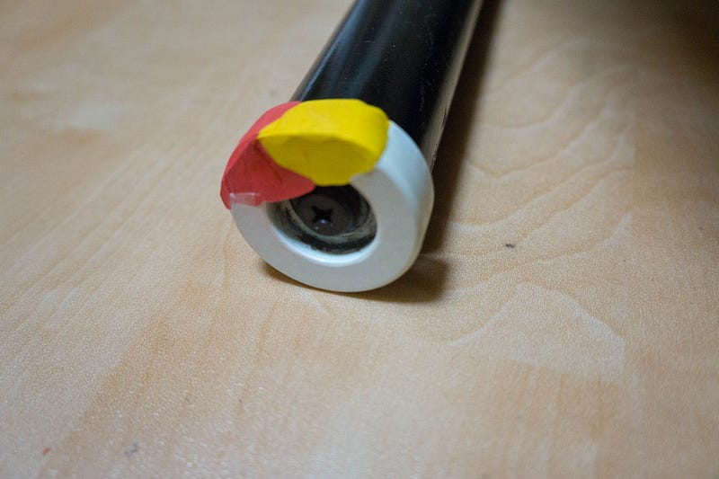
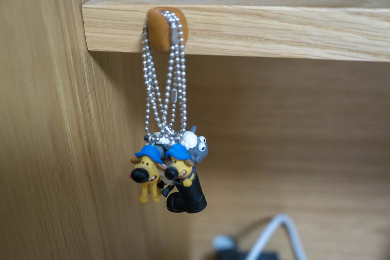

Sugruで家具修繕とかフック作りとか
Sugruで家具修繕とかフック作りとか
何の気ナシにYoutubeを見ていたら、時々見てるチャンネルの人の少し前の動画を見つけて、Sugruを知った。
Sugruとは、粘土のようなものなんだけど、開封してから24時間経つとシリコン状になり、形を保つもの。そのおまけに、乾くまではかなり強力な粘着力を発揮するので、部品の修繕や改造なんかにはもってこいなのだ。
これは広告動画だけど、実際おもしろそうなので何か使い道はないかなーと思っていた… が、用途を見つける前に購入。用途が見つかるまで待ってたらこの手の物は永遠に買えない！
届いた商品をあけてみると、こんな小さめのガムみたいなサイズのものが入っている。今回は8個入りのカラフルなものを購入。

さて、何か使う用途はないか… と探していたら、あったあった。
うちで使っている伸縮テーブルの脚がずいぶん前に割れてたんだった。これ、割れた部品があれば話はもっと簡単だったんだが、なんかの拍子に捨ててしまったのよね…

こんなの部品を作るのは大変だし、かといって、普通の粘土みたいなものでは形を保てなくて意味がない。そこで乾いたら強度を保つことのできるSugruです。

あけるとこんなのが入ってる。これをよくコネコネしてから、開始。

後ろの軸にくっつかないように紙をはさんで作業。Sugru一個じゃ足りなかった。

２色分つかって、大枠を作成。あとはこれが固まってから、カッターで削る。Sugruはこのように固まったあとでも比較的加工が楽なのがよい。
で、翌日、カッターでやりだしたのだが、ここらから加工を結構失敗してしまったのであまりお見せできない感じになってしまった。

あとでSugruを取り除きたいときも、カッターなどで大きい部分を除去してから、残りはこそげ取る感じらしい。

… ちゃんと紙やすりとか買ってくればよかった… このあともう少し補修したりしたんだけど、とにかく強度には問題ないし、良い感じで固まってる。乾いた部分はもう粘着性はないので、ふつうに脚として機能する。
上記でもう少し補修した、と書いたが、そこで茶色のSugruがあまってしまった。
そこで他に何かないかと探したら、妻がガチャガチャで引いてきた「羊のショーン」の細かい某かが散乱してる棚があったので、それを引っかけてまとめられるフックをサクッと作った。

こういうのももちろんフックを買ってくればいい、というのは正解なんだけど、接着断面が狭かったり、ちょっと形を工夫しないといけない場合などにはSugruはかなり使えそう。
なお、Sugruには消費期限があるので、早めに使ってしまうか、残った場合は冷蔵庫にしまっておこう。そうすると大分長持ちするとのこと。
おもちゃの修復とかにも使えそうだし、結構便利ですよ！